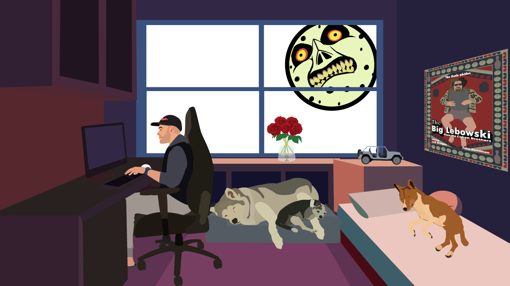

I find a lot of joy in a lot of the simpler parts of life. There is always something complicated going on with family, friends, and don’t get me started on the news. The story I wanted to tell was a story about the things in my life that bring me joy. I used the lofi music videos as my general theme. I like a relaxed setting where I can do or be with the things I love. On the shelf, I have a vase of roses that I wanted to represent my relationship and the love I have for her. All around me are my dogs. They bring me so much joy. Seeing myself surrounded by all of these positive things in my life made this project much easier to work on and made myself grateful for what and who I have in my life.

Credits: Suzy Hazelwood “https://images.pexels.com/photos/1629236/pexels-photo-1629236.jpeg" Pexels. Web. November 23rd, 2018
“Bass Bongo Riddim 90bps” By InspiredFunk CC License Freesound. January 18th, 2009 Freesound - Bass Bongo Riddim 90bps.mp3 by InspiredFunk https://freesound.org/people/InspiredFunk/sounds/66352/
“Lofi Zelda Quest Bells - 120bpm ” By nnadio CC License Freesound. February 27th, 2020 Freesound - Lofi Zelda Quest Bells - 120bpm - Gmin.wav by nnaudio https://freesound.org/people/nnaudio/sounds/507032/
“littleharp” By SonOfTheSinfull CC License Freesound. March 28th, 2016 Freesound - littleharp.wav by SonOfTheSinfull https://freesound.org/people/SonOfTheSinfull/sounds/341575/